Examples¶
WebGL¶
| Image | Description |
|---|---|
| sample01: 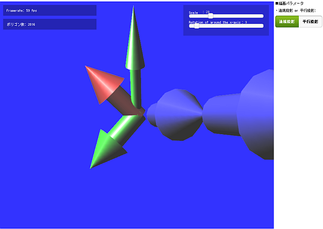 | The left image shows the WebGL Sample Page that was comprised of one shader program.
|
| sample02: 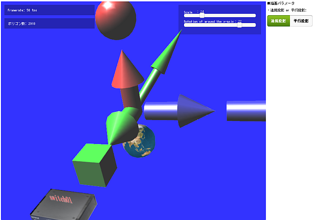 | The left image shows the WebGL Sample Page that was comprised of multi shader programs. |
{kind=link}
{kind=link}
Network Visualization¶
| Image | Description |
|---|---|
| sample03: 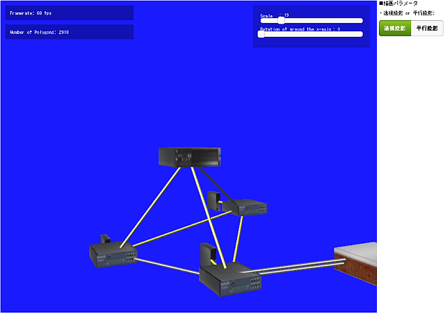 | The left image shows a virtual network topology that was generated in the OpenFlow Network.
|
| sample04: 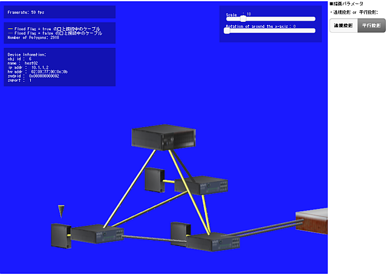 | The left image shows a virtual network topology that was generated in the OpenFlow Network. The sample04 provides following new functions.
|
| sample05: 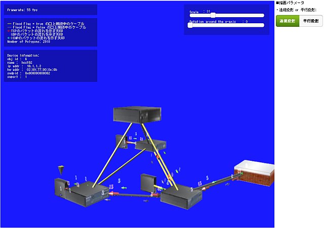 | The Left image shows a virtual network topology that was generated in the OpenFlow Network. The sample05 provides following new functions.
|
| sample06: 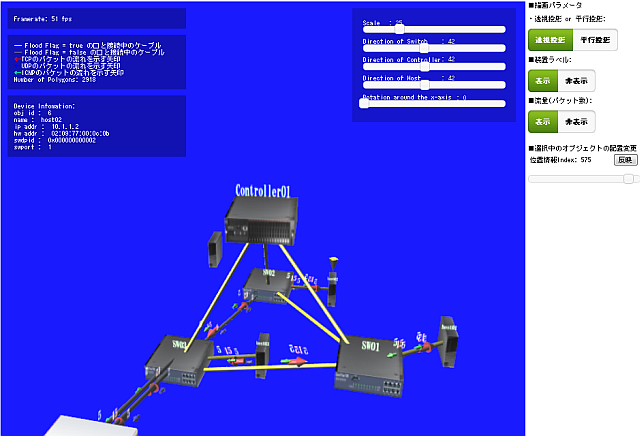 | The left image shows a virtual network topology that was generated in the OpenFlow Network. The sample06 provides following new functions.
|
| sample07: 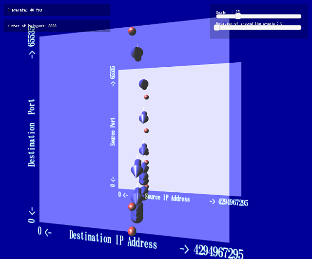 | The left image shows network flows when a scanning utility such as NMAP was executed. |
| sample08: 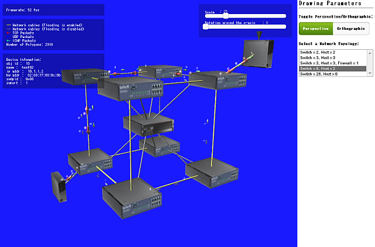 | The left image shows a virtual network topology that was generated in the OpenFlow Network. The sample08 provides following new functions.
|
| sample09: 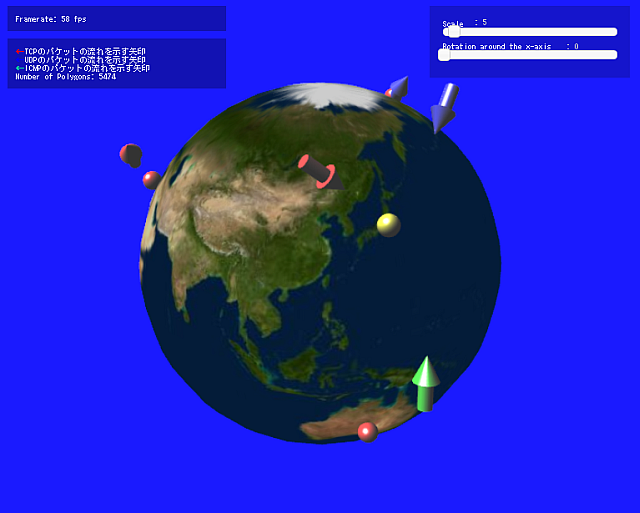 | The left image shows network traffics to/from the Internet. The sample09 provides functions which visualizes the network traffic from the specified information involved of the longitude and latitude.
|
| sample10: 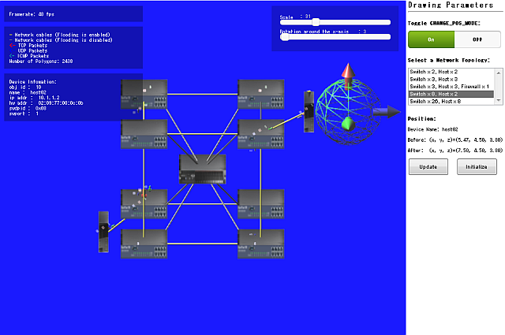 | The left image shows a virtual network topology that was generated in the OpenFlow Network. The sample10 provides following new functions.
|
{kind=link}
{kind=link}
{kind=link}
{kind=link}
{kind=link}
{kind=link}
{kind=link}
{kind=link}
Application Examples¶
This contents is under construction.
| Image | Description |
|---|---|
| jqplot01: 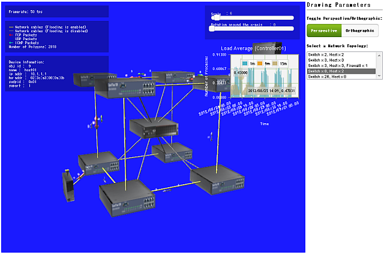 | The left image shows the applied example which combined glNetViz with jqPlot . |
| sdashboard01: 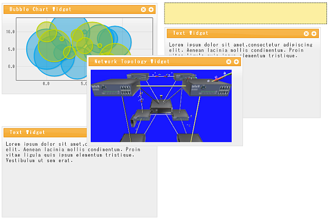 | The left image shows the applied example which combined glNetViz with sDashboard . |
| geoip01: 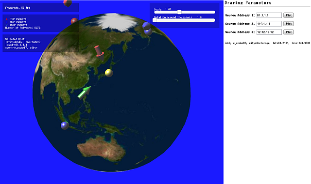 | The left image shows the applied example which combined glNetViz with GeoIP . |
| mmglu01: 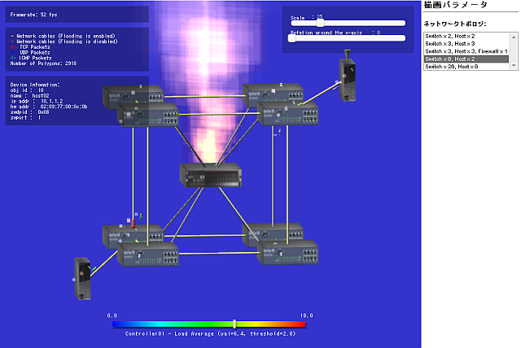 | The left image shows the applied example which combined glNetViz with Mmglu . |
| mongodb01: 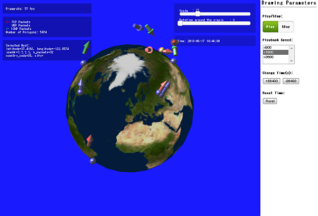 | The left image shows the applied example which combined glNetViz with mongoDB . |
| 2dmap01: 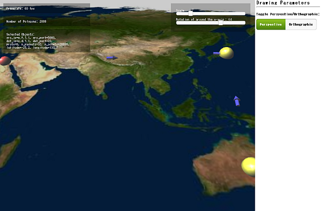 | The left image shows the applied example which combined glNetViz with GeoIP . |
| pox01: 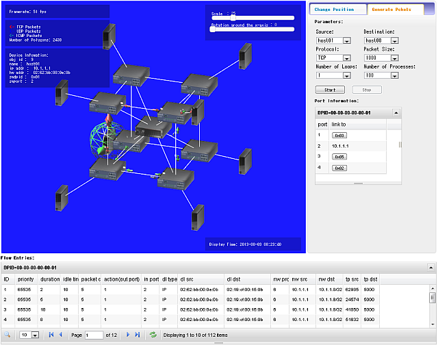 | The left image shows the applied example which combined glNetViz with POX . |
{kind=link}
{kind=link}
{kind=link}
{kind=link}
{kind=link}
{kind=link}
{kind=link}
- jqPlot + glNetViz
- sDashboard + glNetViz
- libgeoip + glNetViz
- Mmglu.particle + glNetViz
- Vimage Jail + fluentd + mongoDB + glNetViz
- 2D Map + glNetViz
- nox + glNetViz
- POX + glNetViz
- trema + glNetViz
- Android + PhoneGap + glNetViz
- Automating Dynamic Malware Analysis